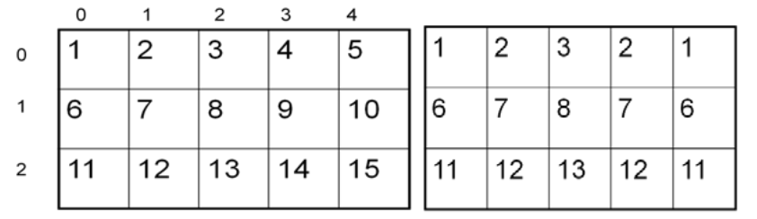
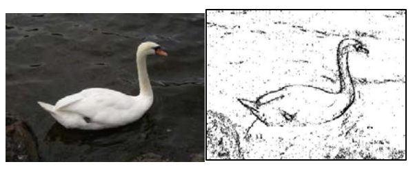

期末大作业II
Contents
期末大作业II#
任务一：图片镜像#
完美对称的图形和建筑随处可见。如果我们在图片宽度的中心线上放置一面镜子，将左侧反射出来会是什么样子？

怎样实现左右镜像的功能？我们知道图片是一个二维列表，只需要沿着列表中轴线，将列表左边的像素值复制到右边即可实现镜像功能。

import cv2
from IPython.display import Image
def mirror(img):
img_width = img.shape[1] # image width
img_height = img.shape[0] # image height
for row in range(img_height):
for col in range(img_width//2):
leftPixel = img[row, col]
img[row,img_width-1-col] = leftPixel
return img
img = cv2.imread('caterpillar.jpeg')
newImage = mirror(img)
cv2.imwrite("1.jpeg", newImage)
Image(filename='1.jpeg')
参考以上代码，完成下列函数：
1-1：示例函数是将图片从左向右镜像，设计函数mirrorVerticalRightToLeft，使图片从右向左镜像。图片可以点击毛毛虫下载。
{kind=link}
1-2：设计函数mirrorHorizontal，使得图片从上向下镜像，如下图所示：

你可以使用毛毛虫的图片，也可以使用红色摩托车。
{kind=link}
[附加题]1-3: 左图是一座希腊神庙，由于岁月的侵蚀，神庙的顶部已经破损。设计函数fix，修复这座希腊神庙的屋顶。修复后的效果应如右图所示：

{kind=link}
1-3需要对图片的部分进行镜像处理。为了找到镜像的位置，你可以借助https://pixspy.com/。
任务二：边缘检测#
边缘检测（edge detection)是一个常见的图像处理问题。例如，数码相机通常具有人脸特征检测功能。一些机器人比赛要求机器人使用数码相机找到球，因此机器人需要能够“看到”一个球的轮廓。
在图片中寻找边缘的一种方法是：将当前像素的颜色与右边的像素进行比较。如果颜色的差异超过某个值，则表明已检测到边缘，当前像素颜色应设置为黑色。否则，当前像素是不是边缘的一部分，其颜色应设置为白色（如下图所示）。
如何计算颜色差异呢？在坐标系中，两个点(x1,y1), (x2, y2)的位置差异可以用它们之间的欧几里得距离来表示： \(\sqrt{(x2-x1)^2+(y2-y1)^2}\)。两个颜色(Blue1, Green1, Red1), (Blue2, Green2, Red2)之间的差异可以表示称：\(\sqrt{(Blue2-Blue1)^2+(Green2-Green1)^2+(Red2-Red1)^2}\)。

edge()函数是一个示例程序，它除了img参数外，还有一个参数叫做dist，用来指定图片边缘所对应的色彩差异程度。用户需要根据图片的风格和特点来调整dist参数，以实现最好的检测效果。
def edge(img, dist):
img_width = img.shape[1] # image width
img_height = img.shape[0] # image height
for i in range(img_height):
for j in range(img_width-1):
currentPixel = img[i,j] #当前像素
nextPixel = img[i,j+1] #右边像素
diff = colorDiff(currentPixel, nextPixel)
if(diff > dist): #检测到轮廓
img[i,j] = [0,0,0]
else: #未检测到轮廓
img[i,j] = [255,255,255]
return img
def colorDiff(p1, p2):
b1, g1, r1 = int(p1[0]),int(p1[1]),int(p1[2])
b2, g2, r2 = int(p2[0]), int(p2[1]), int(p2[2])
return math.sqrt(math.pow((b2-b1),2) + math.pow((g2-g1),2) + math.pow((r2-r1),2))
你需要做的事情：
2-1. 测试edge函数，将天鹅的边缘检测出来，并且显示边缘的图片（如上图所示）。
{kind=link}
2-2. 设计函数edgeUpDown，通过比较像素和它下方的像素点的差值，来实现边缘检测功能。
任务三：图片滤镜#
Instagram和SnapChat这种软件通过它们的滤镜吸引了无数用户。你的最终任务是设计一个独一无二的图像滤镜。滤镜风格不限，你既可以选择对风景照进行艺术加工，也可以设计一个可爱的人像滤镜。
一些idea供参考：
人像的脸部自动美白
在头部带上圣诞头饰
在鼻子上”安装”上宠物的鼻子
将天空变为”火烧云”
在照片边缘加上贴纸图案
将图片变为冷/暖/复古/金属风的色调 ……
你设计的滤镜需要满足以下要求：
你的滤镜不能仅仅处理你的某张图片，它需要可以被所有人来使用！
在提交之前，确认你的滤镜函数可以运行。如果运行不成功则没有分数。所以一定要测试！测试！再测试！
给你的滤镜取一个酷炫的名字（中英文不限）
期末大作业报告#
你需要提交一份报告来介绍你的期末成果。报告至少包括如下几块内容：
标题和姓名：标题自拟
摘要：简要介绍期末大作业实验的内容、方法和结果。
引言：介绍图像编码和图像处理的背景知识，并解释图像处理的实际意义。
实验方法和结果：依次描述各项任务的完成过程，包括使用的图片和算法。详细介绍任务的结果，包括你的代码和生成的图片。
讨论：对大作业完成过程中出现的问题进行讨论和反思。
结论：总结大作业的成果和收获。